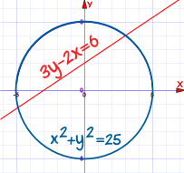
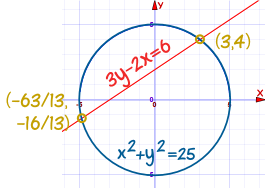

Systems of Linear and Quadratic Equations
 |
A Linear Equation is an equation of a line. |
 |
A Quadratic Equation is the equation of a parabola and has at least one variable squared (such as x2) |
 |
And together they form a System of a Linear and a Quadratic Equation |
A System of those two equations can be solved (find where they intersect), either:
- Graphically (by plotting them both on the Function Grapher and zooming in)
- or using Algebra
How to Solve using Algebra
- Make both equations into "y =" format
- Set them equal to each other
- Simplify into "= 0" format (like a standard Quadratic Equation)
- Solve the Quadratic Equation!
- Use the linear equation to calculate matching "y" values, so we get (x,y) points as answers
An example will help:
Example: Solve these two equations:
- y = x2 - 5x + 7
- y = 2x + 1
Make both equations into "y=" format:
They are both in "y=" format, so go straight to next step
Set them equal to each other
Simplify into "= 0" format (like a standard Quadratic Equation)
Solve the Quadratic Equation!
(The hardest part for me)
You can read how to solve Quadratic Equations, but here we will factor the Quadratic Equation:

Which gives us the solutions x=1 and x=6
Use the linear equation to calculate matching "y" values, so we get (x,y) points as answers
The matching y values are (also see Graph):
- for x=1: y = 2x+1 = 3
- for x=6: y = 2x+1 = 13
Our solution: the two points are (1,3) and (6,13)
I think of it as three stages:
Combine into Quadratic Equation ⇒ Solve the Quadratic ⇒ Calculate the points
Solutions
There are three possible cases:
- No real solution (happens when they never intersect)
- One real solution (when the straight line just touches the quadratic)
- Two real solutions (like the example above)

Time for another example!
Example: Solve these two equations:
- y - x2 = 7 - 5x
- 4y - 8x = -21
Make both equations into "y=" format:
First equation is: y - x2 = 7 - 5x
Second equation is: 4y - 8x = -21
Set them equal to each other
Simplify into "= 0" format (like a standard Quadratic Equation)
Solve the Quadratic Equation!
Using the Quadratic Formula from Quadratic Equations:

- x = [ -b ± √(b2-4ac) ] / 2a
- x = [ 7 ± √((-7)2-4×1×12.25) ] / 2×1
- x = [ 7 ± √(49-49) ] / 2
- x = [ 7 ± √0 ] / 2
- x = 3.5
Just one solution! (The "discriminant" is 0)
Use the linear equation to calculate matching "y" values, so we get (x,y) points as answers
The matching y value is:
- for x=3.5: y = 2x-5.25 = 1.75
Our solution: (3.5,1.75)
Real World Example
Kaboom!
The cannon ball flies through the air, following a parabola:
y = 2 + 0.12x - 0.002x2
The land slopes upward: y = 0.15x
Where does the cannon ball land?

Both equations are already in the "y =" format, so set them equal to each other:
Simplify into "= 0" format:
Solve the Quadratic Equation:
The negative answer can be ignored, so x = 25
Use the linear equation to calculate matching "y" value:
So the cannonball impacts the slope at (25, 3.75)
You can also find the answer graphically by using the Function Grapher:

Both Variables Squared
Sometimes BOTH terms of the quadratic can be squared:
Example: Find the points of intersection of
The circle x2 + y2 = 25
And the straight line 3y - 2x = 6

First put the line in "y=" format:
NOW, Instead of making the circle into "y=" format, we can use substitution (replace "y" in the quadratic with the linear expression):
Now it is in standard Quadratic form, let's solve it:
Now work out y-values:
- 3y - 6 = 6
- 3y = 12
- y = 4
- So one point is (3, 4)
- 3y + 126/13 = 6
- y + 42/13 = 2
- y = 2 - 42/13 = 26/13 - 42/13 = -16/13
- So the other point is (-63/13, -16/13)
